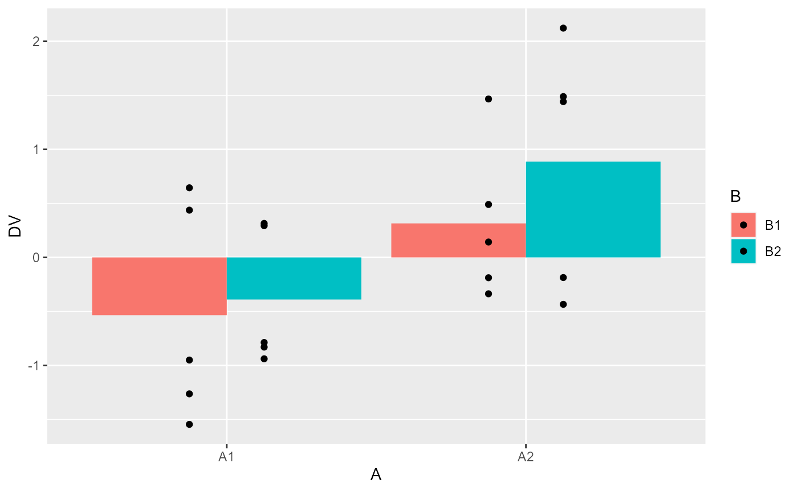
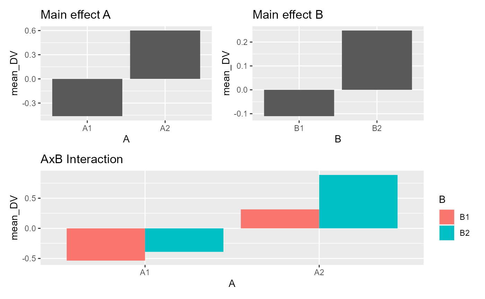

Lab7_FactorialAnova.Rmd
library(dplyr)
#> Warning: package 'dplyr' was built under R version 4.1.3
#>
#> Attaching package: 'dplyr'
#> The following objects are masked from 'package:stats':
#>
#> filter, lag
#> The following objects are masked from 'package:base':
#>
#> intersect, setdiff, setequal, union
library(ggplot2)
#> Warning: package 'ggplot2' was built under R version 4.1.3
water <- rep(c("No Water", "Water"), each = 20)
coffee <- rep(rep(c("No Coffee", "Coffee"), each = 10), 2)
subjects <- c(1:40)
caff_data <- c(sample(40:55, 10, replace = T), sample(30:40, 10, replace = T), sample(40:55, 10, replace = T), sample(65:85, 10, replace = T))
water_caff_data <- data.frame(subjects, water, coffee, caff_data)
water_caff_analysis <- summary(aov(caff_data ~ water*coffee, data = water_caff_data))
### As the results of this 2x2 factorial ANOVA (hydration and caffeination levels as factors) on our fake data suggest, there are significant main effects of hydration levels (F[1, 36] = 190.05, MSE = 18, P < 0.001) and caffeination levels (F[1, 36] = 14.14, MSE = 18, P < 0.001), as well as a significant interaction effect between these two factors (F[1, 36] = 260.66, MSE = 18, P < 0.001.)
plot_caff <- water_caff_data %>%
group_by(water, coffee) %>%
summarise(mean_Energy = mean(caff_data),
SEM = sd(caff_data)/sqrt(length(caff_data)))
#> `summarise()` has grouped output by 'water'. You can override using the
#> `.groups` argument.
ggplot(plot_caff, aes(x=coffee, y=mean_Energy, group=water, fill=water))+
geom_bar(stat="identity", position="dodge")+
geom_errorbar(aes(ymin=mean_Energy-SEM, ymax=mean_Energy+SEM),
position=position_dodge(width=0.1),
width=0.2)+
theme_classic()+
coord_cartesian(ylim=c(0,100))
### This plot of our fake caffeine x hydration data visually confirms what can be interpreted from the ANOVA. Although There is little-to-no discernible difference between hydration conditions when the subjects have not had coffee, the main effect of hydration is likely driven by a substantial difference in energy levels between those that are hydrated and those that are not when they have had coffee. Similarly, the main effect of caffeination is likely driven by a substantial difference in energy levels between those that have or have not been hydrated. This explanation also underlies the highly significant interaction observed: The effects of one factor are dependent on the levels of the other factor. It could be described that coffee increased subjects' energy levels, but only when they were also hydrated. Conversely, it could be stated that hydration increased subjects' energy levels, but only when they were also caffeinated.
### Struggle-report: I admit that I went to the solutions video for this, but in that video, the concept of main effects and interactions (which I was already familiar with) was the only thing explained for this question. So I pretty much did it on my own, but due to intent to check the solutions video, I'd rate myself maybe a 90-95% here.
library(data.table)
#>
#> Attaching package: 'data.table'
#> The following objects are masked from 'package:dplyr':
#>
#> between, first, last
stroop_data <- fread("https://raw.githubusercontent.com/CrumpLab/statisticsLab/master/data/stroop_stand.csv")
### I'm not able to get the "summarytools" packaged installed for some reason.
RTs <- c(as.numeric(unlist(stroop_data[,1])),
as.numeric(unlist(stroop_data[,2])),
as.numeric(unlist(stroop_data[,3])),
as.numeric(unlist(stroop_data[,4]))
)
Congruency <- rep(rep(c("Congruent","Incongruent"),each=50),2)
Posture <- rep(c("Stand","Sit"),each=100)
Subject <- rep(1:50,4)
stroop_df <- data.frame(Subject,Congruency,Posture,RTs)
library(tidyr)
stroop_long<- gather(stroop_data, key=Condition, value=RTs,
congruent_stand, incongruent_stand,
congruent_sit, incongruent_sit)
new_columns <- tstrsplit(stroop_long$Condition, "_", names=c("Congruency","Posture"))
stroop_long <- cbind(stroop_long,new_columns)
stroop_long <- cbind(stroop_long,Subject=rep(1:50,4))
hist(stroop_long$RTs)
library(dplyr)
library(ggplot2)
plot_means <- stroop_long %>%
group_by(Congruency,Posture) %>%
summarise(mean_RT = mean(RTs),
SEM = sd(RTs)/sqrt(length(RTs)))
#> `summarise()` has grouped output by 'Congruency'. You can override using the
#> `.groups` argument.
ggplot(plot_means, aes(x=Posture, y=mean_RT, group=Congruency, fill=Congruency))+
geom_bar(stat="identity", position="dodge")+
geom_errorbar(aes(ymin=mean_RT-SEM, ymax=mean_RT+SEM),
position=position_dodge(width=0.9),
width=.2)+
theme_classic()+
coord_cartesian(ylim=c(700,1000))
library(xtable)
aov_out<-aov(RTs ~ Congruency*Posture, stroop_long)
summary_out<-summary(aov_out)
print(model.tables(aov_out,"means"), format="markdown")
#> Tables of means
#> Grand mean
#>
#> 868.6454
#>
#> Congruency
#> Congruency
#> congruent incongruent
#> 814.9 922.3
#>
#> Posture
#> Posture
#> sit stand
#> 881.4 855.9
#>
#> Congruency:Posture
#> Posture
#> Congruency sit stand
#> congruent 821.9 808.0
#> incongruent 940.8 903.9
library(xtable)
knitr::kable(xtable(summary_out))| Df | Sum Sq | Mean Sq | F value | Pr(>F) | |
|---|---|---|---|---|---|
| Congruency | 1 | 576821.635 | 576821.635 | 43.7344419 | 0.0000000 |
| Posture | 1 | 32303.453 | 32303.453 | 2.4492381 | 0.1191950 |
| Congruency:Posture | 1 | 6560.339 | 6560.339 | 0.4974029 | 0.4814808 |
| Residuals | 196 | 2585080.215 | 13189.185 | NA | NA |
### The data of this postural-stroop experiment was subjected to a 2x2 between-subjects factorial ANOVA, with stimulus congruency and subject posture as factors. Mean response times for incongruent stimuli (922.3ms) were markedly slower than those for congruent stimuli (814.9ms), and this main effect was statistically significant (F[1, 196] = 43.73, MSE = 13189.185, P < 0.001). Mean response times differentiated according to postural condition were slightly different, with a mean time of 881.4ms for the "sitting" condition and 855.9ms for the "standing" condition. However, this difference did not achieve significance in our factorial ANOVA (F[1, 196] = 2.45, MSE = 13189.185, P = 0.1192). The interaction effect between the posture and congruency factors also failed to achieve significance (F[1, 196] = 0.49, MSE = 13189.185, P = 0.4815).
### Struggle-report: I was able to do this without watching the solutions video, but I was walked completely through by the original lab project itself. So I guess I technically got a 100% here, but it doesn't feel deserved.
g1 <- data.frame(IV1 = c("A", "A", "B", "B"),
IV2 = c("1", "2", "1", "2"),
means = c(5, 5, 5, 5))
g2 <- data.frame(IV1 = c("A", "A", "B", "B"),
IV2 = c("1", "2", "1", "2"),
means = c(5, 10, 10, 5))
g3 <- data.frame(IV1 = c("A", "A", "B", "B"),
IV2 = c("1", "2", "1", "2"),
means = c(5, 10, 5, 10))
g4 <- data.frame(IV1 = c("A", "A", "B", "B"),
IV2 = c("1", "2", "1", "2"),
means = c(2, 12, 5, 10))
g5 <- data.frame(IV1 = c("A", "A", "B", "B"),
IV2 = c("1", "2", "1", "2"),
means = c(10, 10, 5, 5))
g6 <- data.frame(IV1 = c("A", "A", "B", "B"),
IV2 = c("1", "2", "1", "2"),
means = c(10, 13, 5, 1))
g7 <- data.frame(IV1 = c("A", "A", "B", "B"),
IV2 = c("1", "2", "1", "2"),
means = c(5, 10, 10, 15))
g8 <- data.frame(IV1 = c("A", "A", "B", "B"),
IV2 = c("1", "2", "1", "2"),
means = c(10, 17, 5, 7))
all_plots <- rbind(g1, g2, g3, g4, g5, g6, g7, g8)
type <- c(rep("~1, ~2, ~1 x 2", 4),
rep("1, ~2, ~1 x 2", 4),
rep("~1, 2, 1 x 2", 4),
rep("~1, 2, 1 x 2", 4),
rep("1, ~2, ~1 x 2", 4),
rep("1, ~2, 1 x 2", 4),
rep("1, 2, ~1 x 2", 4),
rep("1, 2, 1 x 2", 4))
type <- as.factor(type)
all_plots <- cbind(all_plots, type)
plots <- ggplot(all_plots, aes(x = IV1, y = means, group = IV2, fill = IV2))+
geom_bar(stat = "identity", position = "dodge")+
theme_classic()+
facet_wrap(~type, nrow = 2)+
theme(legend.position = "top")
### I have no idea why it's only displaying 6 of the 8 graphs.
### I needed to consult the solutions video to see where you were going with this, and ultimately needed to copy some of the prep in between the dataframe creation and the ggplot itself. However I refused to flat-out copy the numbers and formulae as you suggested in the solutions video. But because it was still so "copied" nevertheless, I'd only give myself maybe a 5-10% here.
save_sim <- tibble()
for(i in 1:10000){
n <- 10
factorial_data <- tibble(A = factor(rep(c("L1","L2"), each = n)),
B = factor(rep(c("A1","A2"), n)),
C = factor(rep(c("B1", "B2"), each = n)),
DV = rnorm(n*2,0,1))
output <- summary(aov(DV~A*B*C, data=factorial_data))
sim_tibble <- tibble(p_vals = output[[1]]$`Pr(>F)`[1:4],
effect = c("A","B", "C", "AxB"),
sim = rep(i,4))
save_sim <-rbind(save_sim,sim_tibble)
}
type_I_errors <- save_sim %>%
filter(p_vals < .05) %>%
group_by(sim) %>%
count()
dim(type_I_errors)[1]/10000
#> [1] 0.1265
### I'm not sure if I did this one right. But (copypasting and adapting from the in-class exercise component) I technically did not need any guidance from the solutions video. So 100%.
### I feel like skipping this one, I already technically did 2 extra anyway...and for this one I was probably going to copiously use the solutions video, in which you didn't actually explain this particular question.
library(tibble)
#> Warning: package 'tibble' was built under R version 4.1.3
n <- 10
factorial_data <- tibble(A = factor(rep(c("L1","L2"), each = n)),
B = factor(rep(c("L1","L2"), n)),
DV = rnorm(n*2,0,1))
aov_out <- aov(DV ~ A*B, data = factorial_data)
summary(aov_out)
#> Df Sum Sq Mean Sq F value Pr(>F)
#> A 1 0.065 0.0647 0.053 0.821
#> B 1 0.032 0.0320 0.026 0.874
#> A:B 1 0.980 0.9801 0.798 0.385
#> Residuals 16 19.641 1.2275
model.tables(aov_out, type = "means")
#> Tables of means
#> Grand mean
#>
#> -0.1736907
#>
#> A
#> A
#> L1 L2
#> -0.23057 -0.11682
#>
#> B
#> B
#> L1 L2
#> -0.21369 -0.13369
#>
#> A:B
#> B
#> A L1 L2
#> L1 -0.0492 -0.4119
#> L2 -0.3782 0.1446
n <- 12
factorial_data <- tibble(A = factor(rep(c("L1","L2"), each = n)),
B = factor(rep(rep(c("L1","L2"), each = n/2),2)),
C = factor(rep(c("L1","L2"), n)),
DV = rnorm(n*2,0,1))
summary(aov(DV ~ A*B*C, data = factorial_data))
#> Df Sum Sq Mean Sq F value Pr(>F)
#> A 1 0.129 0.1290 0.098 0.759
#> B 1 0.081 0.0811 0.061 0.808
#> C 1 0.227 0.2275 0.172 0.684
#> A:B 1 0.895 0.8950 0.677 0.423
#> A:C 1 0.741 0.7409 0.560 0.465
#> B:C 1 0.238 0.2385 0.180 0.677
#> A:B:C 1 0.611 0.6106 0.462 0.507
#> Residuals 16 21.164 1.3227
library(dplyr)
library(ggplot2)
library(patchwork)
#> Warning: package 'patchwork' was built under R version 4.1.3
n <- 10
factorial_data <- tibble(A = factor(rep(c("A1","A2"), each = n)),
B = factor(rep(c("B1","B2"), n)),
DV = rnorm(n*2,0,1))
factorial_data %>%
group_by(A,B) %>%
summarise(mean_DV = mean(DV))
#> `summarise()` has grouped output by 'A'. You can override using the `.groups`
#> argument.
#> # A tibble: 4 x 3
#> # Groups: A [2]
#> A B mean_DV
#> <fct> <fct> <dbl>
#> 1 A1 B1 -0.796
#> 2 A1 B2 -0.449
#> 3 A2 B1 -0.439
#> 4 A2 B2 0.128
factorial_data %>%
ggplot(aes(y=DV, x=A, group = B,fill=B))+
geom_bar(stat="summary", fun = "mean", position="dodge") +
geom_point(position = position_dodge(width=0.5))
A <- factorial_data %>%
group_by(A) %>%
summarise(mean_DV = mean(DV)) %>%
ggplot(aes(y=mean_DV, x=A))+
geom_bar(stat="identity", position="dodge") +
ggtitle("Main effect A")
B <- factorial_data %>%
group_by(B) %>%
summarise(mean_DV = mean(DV)) %>%
ggplot(aes(y=mean_DV, x=B))+
geom_bar(stat="identity", position="dodge")+
ggtitle("Main effect B")
AB <- factorial_data %>%
group_by(A,B) %>%
summarise(mean_DV = mean(DV)) %>%
ggplot(aes(y=mean_DV, x=A, fill=B))+
geom_bar(stat="identity", position="dodge")+
ggtitle("AxB Interaction")
#> `summarise()` has grouped output by 'A'. You can override using the `.groups`
#> argument.
(A+B)/AB
aov_out <- aov(DV ~ A*B, data = factorial_data)
summary(aov_out)
#> Df Sum Sq Mean Sq F value Pr(>F)
#> A 1 1.092 1.0921 1.003 0.331
#> B 1 1.045 1.0453 0.960 0.342
#> A:B 1 0.061 0.0609 0.056 0.816
#> Residuals 16 17.421 1.0888
model.tables(aov_out, type = "means")
#> Tables of means
#> Grand mean
#>
#> -0.3891335
#>
#> A
#> A
#> A1 A2
#> -0.6228 -0.1555
#>
#> B
#> B
#> B1 B2
#> -0.6177 -0.1605
#>
#> A:B
#> B
#> A B1 B2
#> A1 -0.7962 -0.4494
#> A2 -0.4393 0.1283
a1b1 <- c(11,9,7,11,12,7,12,11,10,10)
a1b2 <- c(12,12,7,9,9,10,12,10,7,12)
a2b1 <- c(13,18,19,13,8,15,13,9,8,14)
a2b2 <- c(13,21,20,15,17,14,13,14,16,7)
a3b1 <- c(17,20,22,13,21,16,23,19,20,19)
a3b2 <- c(32,31,27,30,29,30,33,25,25,28)
recall_data <- tibble(words_recalled = c(a1b1,a1b2,
a2b1,a2b2,
a3b1,a3b2),
A = rep(c("12 words",
"24 words",
"48 words"), each = 20),
B = rep(rep(c("Free recall",
"Cued Recall"), each = 10),3)
)
ggplot(recall_data, aes(x=A, y=words_recalled, group = B, linetype=B))+
geom_point(stat="summary", fun="mean")+
geom_line(stat="summary", fun="mean")
aov_out <- aov(words_recalled ~ A*B, data = recall_data)
summary(aov_out)
#> Df Sum Sq Mean Sq F value Pr(>F)
#> A 2 2080 1040 115.56 < 2e-16 ***
#> B 1 240 240 26.67 3.58e-06 ***
#> A:B 2 280 140 15.56 4.62e-06 ***
#> Residuals 54 486 9
#> ---
#> Signif. codes: 0 '***' 0.001 '**' 0.01 '*' 0.05 '.' 0.1 ' ' 1
model.tables(aov_out, type="means")
#> Tables of means
#> Grand mean
#>
#> 16
#>
#> A
#> A
#> 12 words 24 words 48 words
#> 10 14 24
#>
#> B
#> B
#> Cued Recall Free recall
#> 18 14
#>
#> A:B
#> B
#> A Cued Recall Free recall
#> 12 words 10 10
#> 24 words 15 13
#> 48 words 29 19
A1 <- c(127,121,117,109,107,101,98,94,97,89)
A2 <- c(117,109,113,113,108,104,95,93,96,92)
A3 <- c(111,111,111,101,99,91,95,89,89,83)
A4 <- c(108,100,100,92,92,90,87,77,89,85)
random_data <- tibble(scores = c(A1,A2,A3,A4),
A = factor(rep(1:4,each = 10)),
B = factor(rep(rep(1:5,each=2),4))
)
aov.lm <- lm(formula = scores ~ A*B, data = random_data)
car::Anova(aov.lm, type = 2)
#> Anova Table (Type II tests)
#>
#> Response: scores
#> Sum Sq Df F value Pr(>F)
#> A 1200 3 20 3.102e-06 ***
#> B 3200 4 40 2.836e-09 ***
#> A:B 240 12 1 0.4827
#> Residuals 400 20
#> ---
#> Signif. codes: 0 '***' 0.001 '**' 0.01 '*' 0.05 '.' 0.1 ' ' 1
aov_out <- aov(scores ~ A*B, data = random_data)
summary(aov_out)
#> Df Sum Sq Mean Sq F value Pr(>F)
#> A 3 1200 400 20 3.10e-06 ***
#> B 4 3200 800 40 2.84e-09 ***
#> A:B 12 240 20 1 0.483
#> Residuals 20 400 20
#> ---
#> Signif. codes: 0 '***' 0.001 '**' 0.01 '*' 0.05 '.' 0.1 ' ' 1
save_sim <- tibble()
for(i in 1:10000){
n <- 10
factorial_data <- tibble(A = factor(rep(c("L1","L2"), each = n)),
B = factor(rep(c("L1","L2"), n)),
DV = rnorm(n*2,0,1))
output <- summary(aov(DV~A*B, data=factorial_data))
sim_tibble <- tibble(p_vals = output[[1]]$`Pr(>F)`[1:3],
effect = c("A","B","AxB"),
sim = rep(i,3))
save_sim <-rbind(save_sim,sim_tibble)
}
type_I_errors <- save_sim %>%
filter(p_vals < .05) %>%
group_by(sim) %>%
count()
dim(type_I_errors)[1]/10000
#> [1] 0.1365
save_sim %>%
group_by(effect) %>%
summarise(type_I_error = length(p_vals[p_vals < .05])/10000)
#> # A tibble: 3 x 2
#> effect type_I_error
#> <chr> <dbl>
#> 1 A 0.0499
#> 2 AxB 0.0482
#> 3 B 0.0496
library(DBSStats2SemesterProject)